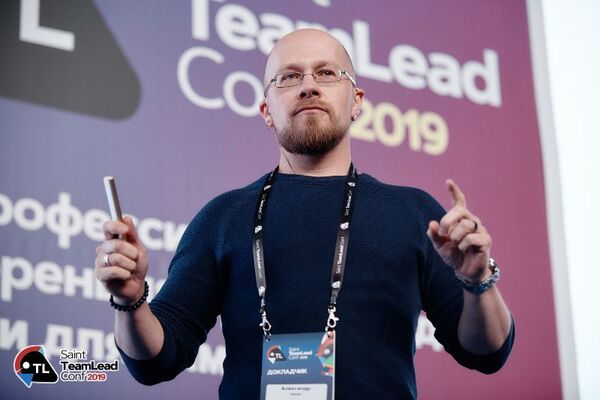

Тимлид
Профессия
Тимлид (от англ. "Team Lead" — руководитель команды) — это специалист, ответственный за управление, координацию и поддержку команды с целью достижения поставленных задач и выполнения проектов. Тимлид выступает связующим звеном между менеджментом и разработчиками, переводя бизнес-задачи в технические решения и контролируя их реализацию. В его зону ответственности входит распределение задач, наставничество, разрешение конфликтов и поддержание продуктивной атмосферы в команде.
В чём заключается
Тимлид решает комплексные задачи, связанные с управлением командой и техническим процессом. Он участвует в планировании спринтов, оценивает сложность задач, распределяет нагрузку между разработчиками и следит за соблюдением дедлайнов. Важная часть работы — код-ревью и контроль качества: тимлид проверяет, чтобы решения соответствовали архитектурным стандартам и лучшим практикам. Он также выступает техническим консультантом, помогая команде преодолевать сложные проблемы, и взаимодействует с другими отделами (продукт-менеджерами, дизайнерами, тестировщиками). В кризисных ситуациях тимлид берёт на себя принятие решений, будь то срочное исправление багов или перераспределение ресурсов.
Отрасли
В веб-разработке тимлиды следят за согласованностью frontend и backend, выбирают стек технологий и оптимизируют производительность сервисов. В мобильной разработке они часто фокусируются на кросс-платформенных решениях и интеграции с API. В геймдеве они координируют работу программистов, художников и дизайнеров, обеспечивая стабильность игровых движков. В Data Science и AI тимлиды управляют pipeline’ами данных и внедрением моделей машинного обучения. В кибербезопасности они распределяют задачи по тестированию защитных механизмов и реагированию на инциденты.
Суть работы
Работа тимлида — это баланс между технической и управленческой деятельностью. С одной стороны, он остаётся практикующим разработчиком, способным погрузиться в код и предложить оптимальное решение. С другой — выступает лидером, который мотивирует команду, разрешает конфликты и создаёт условия для эффективной работы. Тимлид не просто ставит задачи, а учит команду мыслить системно: например, объясняет, как разбить монолит на микросервисы или внедрить CI/CD для ускорения релизов. Он также отвечает за развитие сотрудников, составляя индивидуальные планы обучения и помогая им расти профессионально.
Образование
1. Высшее образование (Для фундамента)
Программная инженерия
Управление IT-проектами
Компьютерные науки
Системный анализ
2. Колледжи и техникумы
Программирование
Сетевые технологии
3. Онлайн-образование
4. Bootcamp’ы (Для скорости)
5. Альтернативные пути
Переход из senior-разработчиков через постепенное расширение зоны ответственности.
Военные/технические вузы для работы в госструктурах